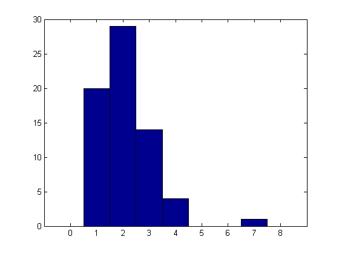
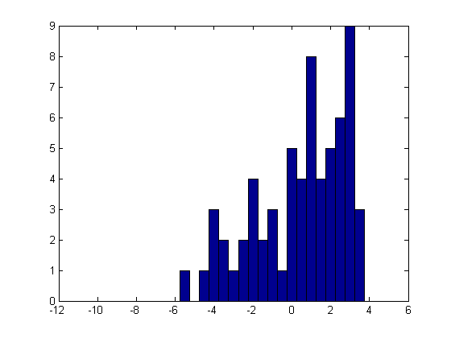
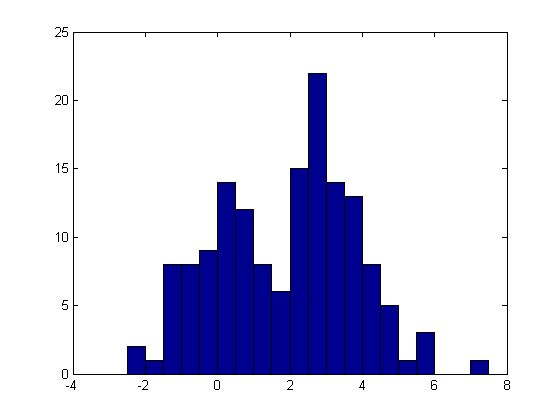
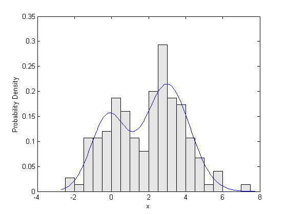

This demo shows some examples of using the Statistics Toolbox function MLE to fit custom distributions to univariate data. Using MLE, you can compute maximum likelihood parameter estimates, and estimate their precision, for many kinds of distributions beyond those for which the Toolbox provides specific fitting functions.
To do this, you need to define the distribution using one or more M functions. In the simplest cases, you can write code to compute the probability density function (PDF) for the distribution that you want to fit, and MLE will do most of the remaining work for you. This demo covers those cases. In problems with censored data, you must also write code to compute the cumulative distribution function (CDF) or the survival function (SF). In some other problems, it may be advantageous to define the log-likelihood function (LLF) itself. The second part of this demo, Fitting Custom Univariate Distributions, Part 2, covers both of those latter cases.
Count data are often modelled using a Poisson distribution, and you can use the Statistics Toolbox function POISSFIT to fit a Poisson model. However, in some situations, counts that are zero do not get recorded in the data, and so fitting a Poisson distribution is not straight-forward because of those "missing zeros". This example will show how to fit a Poisson distribution to zero-truncated data, using the function MLE.
For this example, we'll use simulated data from a zero-truncated Poisson distribution. First, we generate some random Poisson data.
randn('state',0); rand('state',0); n = 75; lambda = 1.75; x = poissrnd(lambda,n,1);
Next, we remove all the zeros from the data to simulate the truncation.
x = x(x > 0); length(x)
ans =
68
Here's a histogram of these simulated data. Notice that the data look reasonably like a Poisson distribution, except that there are no zeros. We will fit them with a distribution that is identical to a Poisson on the positive integers, but that has no probability at zero. In this way, we can estimate the Poisson parameter lambda while accounting for the "missing zeros".
hist(x,[0:1:max(x)+1]);
The first step is to define the zero-truncated Poisson distribution by its probability function (PF). We will create a function to compute the probability for each point in x, given a value for the Poisson distribution's mean parameter lambda. The PF for a zero-truncated Poisson is just the usual Poisson PF, renormalized so that it sums to one. With zero truncation, the renormalization is just 1-Pr{0}. The easiest way to create a function for the PF is to use an anonymous function.
pf_truncpoiss = @(x,lambda) poisspdf(x,lambda) ./ (1-poisscdf(0,lambda));
For simplicity, we have assumed that all the x values given to this function will be positive integers, with no checks. Error checking, or a more complicated distribution, would probably take more a single line of code, suggesting that the function should be defined in a separate M-file.
The next step is to provide a reasonable rough first guess for the parameter lambda. In this case, we'll just use the sample mean.
start = mean(x)
start =
2.1029
We provide MLE with the data, and with the anonymous function, using the 'pdf' parameter. (The Poisson is discrete, so this is really a probability function, not a PDF.) Because the mean parameter of the Poisson distribution must be positive, we also specify a lower bound for lambda. MLE returns the maximum likelihood estimate of lambda, and, optionally, approximate 95% confidence intervals for the parameters.
[lambdaHat,lambdaCI] = mle(x, 'pdf',pf_truncpoiss, 'start',start, 'lower',0)
lambdaHat =
1.7302
lambdaCI =
1.3721
2.0883
Notice that the parameter estimate is smaller than the sample mean. That's just as it should be, because the maximum likelihood estimate accounts for the missing zeros not present in the data.
We can also compute a standard error estimate for lambda, using the large-sample variance approximation returned by MLECOV.
avar = mlecov(lambdaHat, x, 'pdf',pf_truncpoiss);
stderr = sqrt(avar)
stderr =
0.1827
It sometimes also happens that continuous data are truncated. For example, observations larger than some fixed value might not be recorded because of limitations in the way data are collected. This example will show how to fit a normal distribution to truncated data, using the function MLE.
For this example, we simulate data from a truncated normal distribution. First, we generate some random normal data.
n = 75; mu = 1; sigma = 3; x = normrnd(mu,sigma,n,1);
Next, we'll remove any observations that fall beyond the truncation point, xTrunc. Throughout this example, we'll assume that xTrunc is known, and does not need to be estimated.
xTrunc = 4; x = x(x < xTrunc); length(x)
ans =
64
Here's a histogram of these simulated data. We will fit them with a distribution that is identical to a normal for x < xTrunc, but that has zero probability above xTrunc. In this way, we can estimate the normal parameters mu and sigma while accounting for the "missing tail".
hist(x,[-10:.5:4]);
As in the previous example, we will define the truncated normal distribution by its PDF, and create a function to compute the probability density for each point in x, given values for the parameters mu and sigma. With the truncation point fixed and known, the PDF for a truncated normal is just the usual normal PDF, truncated, and then renormalized so that it integrates to one. The renormalization is just the CDF evaluated at xTrunc. For simplicity, we'll assume that all x values are less than xTrunc, without checking. We'll use an anonymous function to define the PDF.
pdf_truncnorm = @(x,mu,sigma) normpdf(x,mu,sigma) ./ normcdf(xTrunc,mu,sigma);
The truncation point, xTrunc, is not being estimated, and so it is not among the distribution parameters in the PDF function's input argument list. xTrunc is also not part of the data vector input argument. With an anonymous function, we can simply refer to the variable xTrunc that has already been defined in the workspace, and there is no need to worry about passing it in as an additional argument.
We also need to provide a rough starting guess for the parameter estimates. In this case, because the truncation is not too extreme, the sample mean and standard deviation will probably work well.
start = [mean(x),std(x)]
start =
0.4491 2.3565
We provide MLE with the data, and with the anonymous function, using the 'pdf' parameter. Because sigma must be positive, we also specify lower parameter bounds. MLE returns the maximum likelihood estimates of mu and sigma as a single vector, as well as a matrix of approximate 95% confidence intervals for the two parameters.
[paramEsts,paramCIs] = mle(x, 'pdf',pdf_truncnorm, 'start',start, 'lower',[-Inf 0])
paramEsts =
1.7136 3.1553
paramCIs =
-0.0614 2.0716
3.4885 4.2390
Notice that the estimates of mu and sigma are quite a bit larger than the sample mean and standard deviation. This is because the model fit has accounted for the "missing" upper tail of the distribution.
We can compute an approximate covariance matrix for the parameter estimates using MLECOV. The approximation is usually reasonable in large samples, and the standard errors of the estimates can be approximated by the square roots of the diagonal elements.
acov = mlecov(paramEsts, x, 'pdf',pdf_truncnorm)
stderr = sqrt(diag(acov))
acov =
0.8201 0.4051
0.4051 0.3057
stderr =
0.9056
0.5529
Some datasets exhibit bimodality, or even multimodality, and fitting a standard distribution to such data is usually not appropriate. However, a mixture of simple unimodal distributions can often model such data very well. In fact, it may even be possible to give an interpretation to the source of each component in the mixture, based on application-specific knowledge.
In this example, we will fit a mixture of two normal distributions to some simulated data. This mixture might be described with the following constructive definition for generating a random value:
First, flip a biased coin. If it lands heads, pick a value at random from a normal distribution with mean mu_1 and standard deviation sigma_1. If the coin lands tails, pick a value at random from a normal distribution with mean mu_2 and standard deviation sigma_2.
For this example, we'll generate data from a mixture of Student's t distributions rather than using the same model as we are fitting. This is the sort of thing you might do in a Monte-Carlo simulation to test how robust a fitting method is to departures from the assumptions of the model being fit. Here, however, we'll fit just one simulated data set.
x = [trnd(20,1,50) trnd(4,1,100)+3]; hist(x,-2.25:.5:7.25);
As in the previous examples, we'll define the model to fit by creating a function that computes the probability density. The PDF for a mixture of two normals is just a weighted sum of the PDFs of the two normal components, weighted by the mixture probability. This PDF is simple enough to create using an anonymous function. The function takes six inputs: a vector of data at which to evaluate the PDF, and the distribution's five parameters. Each component has parameters for its mean and standard deviation; the mixture probability makes a total of five.
pdf_normmixture = @(x,p,mu1,mu2,sigma1,sigma2) ...
p*normpdf(x,mu1,sigma1) + (1-p)*normpdf(x,mu2,sigma2);
We'll also need an initial guess for the parameters. The more parameters a model has, the more a reasonable starting point matters. For this example, we'll start with an equal mixture (p = 0.5) of normals, centered at the two quartiles of the data, with equal standard deviations. The starting value for standard deviation comes from the formula for the variance of a mixture in terms of the mean and variance of each component.
pStart = .5; muStart = quantile(x,[.25 .75]) sigmaStart = sqrt(var(x) - .25*diff(muStart).^2) start = [pStart muStart sigmaStart sigmaStart];
muStart =
0.2776 3.3135
sigmaStart =
1.1368
Finally, we need to specify bounds of zero and one for the mixing probability, and lower bounds of zero for the standard deviations. The remaining elements of the bounds vectors are set to +Inf or -Inf, to indicate no restrictions.
lb = [0 -Inf -Inf 0 0]; ub = [1 Inf Inf Inf Inf]; paramEsts = mle(x, 'pdf',pdf_normmixture, 'start',start, 'lower',lb, 'upper',ub)
Warning: Maximum likelihood estimation did not converge. Iteration limit exceeded.
paramEsts =
0.3480 -0.1840 3.0076 0.9276 1.2146
With five parameters to optimize over, the maximum likelihood optimization has exceeded its default iteration limit. The default for custom distributions is 200 iterations.
statset('mlecustom')
ans =
Display: 'off'
MaxFunEvals: 400
MaxIter: 200
TolBnd: 1.0000e-006
TolFun: 1.0000e-006
TolX: 1.0000e-006
GradObj: 'off'
DerivStep: 6.0555e-006
FunValCheck: 'on'
We'll need to override that default, using an options structure created with STATSET function. We'll also increase the (PDF) function evaluation limit.
options = statset('MaxIter',300, 'MaxFunEvals',600); paramEsts = mle(x, 'pdf',pdf_normmixture, 'start',start, ... 'lower',lb, 'upper',ub, 'options',options)
paramEsts =
0.3480 -0.1840 3.0076 0.9276 1.2146
It appears that the final iterations to convergence mattered only in the last few digits of the result. Nonetheless, it is always a good idea to make sure that convergence has been reached.
Finally, we can plot the fitted density against a probability histogram of the raw data, to check the fit visually.
bins = -2.5:.5:7.5; h = bar(bins,histc(x,bins)/(length(x)*.5),'histc'); set(h,'FaceColor',[.9 .9 .9]); xgrid = linspace(1.1*min(x),1.1*max(x),200); pdfgrid = pdf_normmixture(xgrid,paramEsts(1),paramEsts(2),paramEsts(3),paramEsts(4),paramEsts(5)); hold on; plot(xgrid,pdfgrid,'-'); hold off xlabel('x'); ylabel('Probability Density');
It sometimes happens when data are collected that each observation was made with a different precision or reliability. For example, if several experimenters each make a number of independent measurements of the same quantity, but each reports only the average of their measurements, the reliability of each reported data point will depend on the number of raw observations that went into it. If the original raw data are not available, an estimate of their distribution must account for the fact that the data that are available, the averages, each have different variances. This model actually has an explicit solution for maximum likelihood parameter estimates. However, for the purposes of illustration, we will use MLE to estimate the parameters.
Assume that we have 10 data points, where each one is actually the average of anywhere from 1 to 8 observations. Those original observations are not available, but we know how many there were for each of our data points. We need to estimate the mean and standard deviation of the raw data.
x = [0.25 -1.24 1.38 1.39 -1.43 2.79 3.52 0.92 1.44 1.26]; m = [ 8 2 1 3 8 4 2 5 2 4];
The variance of each data point is inversely proportional to the number of observations that went into it, so we will use 1/m to weight the variance of each data point in a maximum likelihood fit.
w = 1 ./ m
w =
0.1250 0.5000 1.0000 0.3333 0.1250 0.2500 0.5000 0.2000 0.5000 0.2500
In the model we're fitting here, we could define the distribution by its PDF, but using a log PDF is somewhat more natural, because the normal PDF is of the form
c .* exp(-0.5 .* z.^2),
and MLE would have to take the log of the PDF anyway, to compute the log-likelihood. So instead, we will create a function that computes the log PDF directly.
The log PDF function has to compute the log of the probability density for each point in x, given values for mu and sigma. It will also need to account for the different variance weights. Unlike the previous examples, this distribution function is a little more complicated than a one-liner, and is most clearly written as a separate function in its own M-file. Because the log PDF function needs the observation counts as additional data, the most straight-forward way to accomplish this fit is to use nested functions.
We've created a separate M-file for a function called wgtnormfit.m. This function contains data initialization, a nested function for the log PDF in the weighted normal model, and a call to the MLE function to actually fit the model. Because sigma must be positive, we must specify lower parameter bounds. The call to MLE returns the maximum likelihood estimates of mu and sigma in a single vector.
type wgtnormfit.m
function paramEsts = wgtnormfit
%WGTNORMFIT Fitting demo for a weighted normal distribution.
%
% Copyright 1984-2004 The MathWorks, Inc.
% $Revision: 1.1.4.1 $ $Date: 2004/03/22 23:55:37 $
x = [0.25 -1.24 1.38 1.39 -1.43 2.79 3.52 0.92 1.44 1.26];
m = [ 8 2 1 3 8 4 2 5 2 4];
function logy = logpdf_wn(x,mu,sigma)
v = sigma.^2 ./ m;
logy = -(x-mu).^2 ./ (2.*v) - .5.*log(2.*pi.*v);
end
paramEsts = mle(x, 'logpdf',@logpdf_wn, 'start',[mean(x),std(x)], 'lower',[-Inf,0]);
end
In wgtnormfit.m, we pass MLE a handle to the nested function LOGPDF_WN, using the 'logpdf' parameter. That nested function refers to the observation counts, m, in the computation of the weighted log PDF. Because the vector m is defined in its parent function, LOGPDF_WN has access to it, and there is no need to worry about passing m in as an explicit input argument.
We need to provide a rough first guess for the parameter estimates. In this case, the unweighted sample mean and standard deviation should be ok, and that's what wgtnormfit.m uses.
start = [mean(x),std(x)]
start =
1.0280 1.5490
To fit the model, we run the fitting function.
paramEsts = wgtnormfit
paramEsts =
0.6244 2.8823
Notice that the estimate of mu is less than two-thirds that of the sample mean. That's just as it should be: the estimate is be influenced most by the most reliable data points, i.e., the ones that were based on the the largest number of raw observations. In this dataset, those points tend to pull the estimate down from the unweighted sample mean.
In maximum likelihood estimation, confidence intervals for the parameters are usually computed using a large-sample normal approximation for the distribution of the estimators. This is often a reasonable assumption, but with small sample sizes, it is sometimes advantageous to improve that normal approximation by transforming one or more parameters. In this example, we have a location parameter and a scale parameter. Scale parameters are often transformed to their log, and we will do that here with sigma. First, we'll create a new log PDF function, and then recompute the estimates using that parameterization.
The new log PDF function is created as a nested function within the function wgtnormfit2.m. As in the first fit, this M-file contains data initialization, a nested function for the log PDF in the weighted normal model, and a call to the MLE fuction to actually fit the model. Because sigma can be any positive value, log(sigma) is unbounded, and we no longer need to specify lower or upper bounds. Also, the call to MLE in this case returns both the parameter estimates and confidence intervals.
type wgtnormfit2.m
function [paramEsts,paramCIs] = wgtnormfit2
%WGTNORMFIT2 Fitting demo for a weighted normal distribution (log(sigma) parameterization).
%
% Copyright 1984-2004 The MathWorks, Inc.
% $Revision: 1.1.4.1 $ $Date: 2004/03/22 23:55:38 $
x = [0.25 -1.24 1.38 1.39 -1.43 2.79 3.52 0.92 1.44 1.26];
m = [ 8 2 1 3 8 4 2 5 2 4];
function logy = logpdf_wn2(x,mu,logsigma)
v = exp(logsigma).^2 ./ m;
logy = -(x-mu).^2 ./ (2.*v) - .5.*log(2.*pi.*v);
end
[paramEsts,paramCIs] = mle(x, 'logpdf',@logpdf_wn2, 'start',[mean(x),log(std(x))]);
end
Notice that wgtnormfit2.m uses the same starting point, transformed to the new parameterization, i.e., take the log of the sample standard deviation.
start = [mean(x),log(std(x))]
start =
1.0280 0.4376
[paramEsts,paramCIs] = wgtnormfit2
paramEsts =
0.6244 1.0586
paramCIs =
-0.2802 0.6203
1.5290 1.4969
Since the parameterization uses log(sigma), we have to transform back to the original scale to get an estimate and confidence interval for sigma. Notice that the estimates for both mu and sigma are the same as in the first fit, because maximum likelihood estimates are invariant to parameterization.
muHat = paramEsts(1) sigmaHat = exp(paramEsts(2))
muHat =
0.6244
sigmaHat =
2.8823
muCI = paramCIs(:,1) sigmaCI = exp(paramCIs(:,2))
muCI =
-0.2802
1.5290
sigmaCI =
1.8596
4.4677